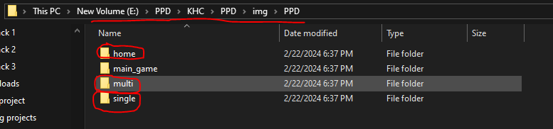
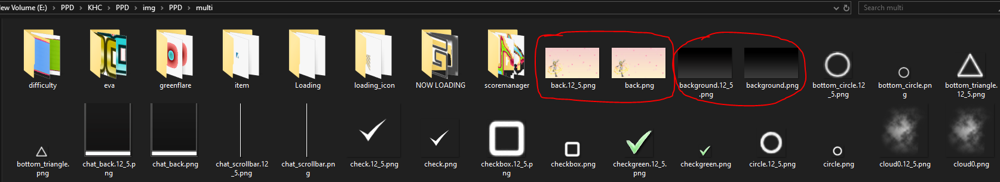
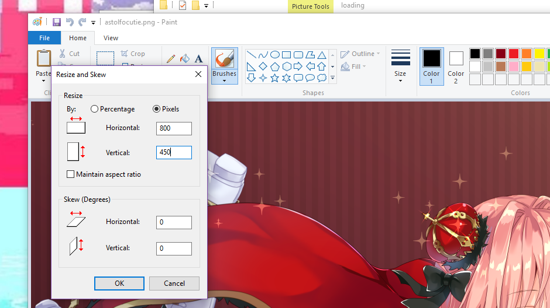

Here is where you'll find miscellaneous tools for PPD.
This includes further customization tutorials, scripting resources, etc.
- Custom PPD Menu Backgrounds Tutorial -
This tutorial will teach you how to have your own custom home screen, song select/result screen, and multiplayer backgrounds!
1. Back up your original background.png and back.png files found in the img/PPD/home, img/PPD/multi, and img/PPD/single folders. This is just in case you run into any errors!
 2. Find the image/images you want to use for backgrounds. Then, open the pictures one at a time in paint or any other editing program.
3. Click the resize button at the top. A little box will pop up. First, click the pixels tab and uncheck 'Maintain aspect ratio.' Next, change the image dimensions to 800x450: so, change the horizontal value to 800 and the vertical value to 450. Do this for each image.
4. Save the images as a .png and rename them to either background.png or back.png.
5. Open the PPD folder and go into the img folder. Then, open the PPD folder inside the img folder.
6. Open the folders depending on which screen you made custom backgrounds for (home for home screen, multi for multiplayer, single for singleplayer).
7. Replace the old background.png and back.png images with your new ones.
You now have custom PPD menu backgrounds!

This guide was originally made by Maddie (PPD's #1 survivor). Thank you, Maddie!
- How to Add Custom Loading Screens -
1. Open the 'KHC' folder, then open the main 'PPD' folder.
2. Open the 'img' folder, then the 'loading' folder.
3. Add any images you'd like as a loading screen to this folder.
4. Restart PPD.
You now have custom loading screens!
If you'd like some recommendations, click here for a pack of official wallpapers from Project DIVA: Arcade.
- How to Make Custom Skins -
1. Download this file from MEGA compiled by Blizzin.
2. Unzip the .rar and you will have two folders. In the 'AFT Skins' folder, you can find examples of skins from Project DIVA: Arcade that can serve as a base if you want. Alternatively, click here for a preview document of all Arcade skins.
3. Open the 'Project' folder. Then, open the '720p Skin' folder, then 'Resource,' then 'Image.' (Project\720p Skin\Resource\Image).
4. There is a BOTTOM_BACK and TOP_BACK .png. To make your own skin, you have to replace these .png images with your own images in this folder.
The image sizes should be:
BOTTOM_BACK: 1280x201 pixels
TOP_BACK: 1280x70 pixels
The file format should be .PNG with a transparent background.
Optional step: You can also optionally make a red version of the BOTTOM_BACK and TOP_BACK images. This will enable the red flashing when on low HP during gameplay. If you do, name them BOTTOM_RED and TOP_RED.
5. Open PPDEditor, go to File -> Open Project. Select the 720p Skin.ppdproj from the Project folder and open it.
6. Don't do this step yet if you made the red version of top and bottom_back. Go to File->Publish Mod, fill in the details but don't include any of these characters: \ / : * ? " < > |. You can change where the mod will be saved to with the three dots. Click OK and you're finished!
7. Now, put your completed skin mod into your 'mods' folder and activate it when you'd like to use it.
Click here to view this guide with image references and a tutorial on how to use the Script Manager to make the skin flash red.
This guide was originally written (with images) by SoupMarine (PPD's #1 Woman in STEM). Thank you, Soup!